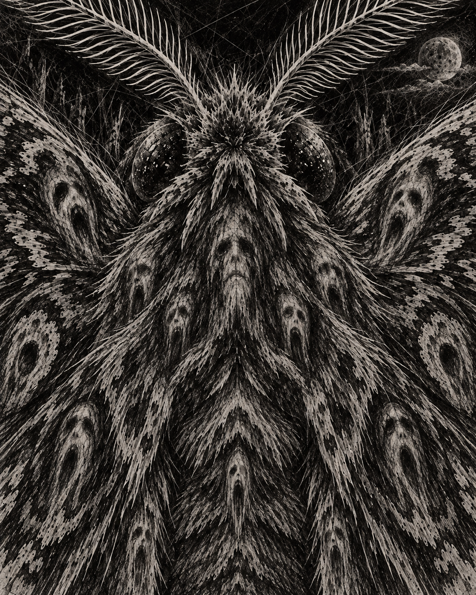

A la tía Marta, que me enseñó que para librarse de la maldición del te-tué había que esparcirla al máximo de gente posible, para que el susodicho no tuviera tiempo de alcanzarlos a todos.
6 de abril
Últimamente despierto siempre a la misma hora.
3:33.
No sé desde cuándo me pasa. Probablemente hace más de una semana, aunque recién ahora empecé a prestarle atención.
Abro los ojos, miro el teléfono y ahí está.
3:33.
Después vuelvo a dormir.
Nunca le encontré nada raro. Uno acostumbra al cuerpo a ciertas horas. Supongo que debe existir una explicación parecida para despertarse a mitad de la noche.
El asunto salió hoy porque todos en la casa insistieron en que fuera a revisarme los ronquidos.
Carlos es el más afectado.
Dice que duermo como las hueas. Que hablo, que me levanto, que abro puertas, que camino por el pasillo y después vuelvo a acostarme.
Desde mi punto de vista duermo perfecto.
Me acuesto alrededor de las once, despierto brevemente a las 3:33 y después sigo hasta las seis. No tengo sueño durante el día. No necesito siesta después de almuerzo. Nada.
El doctor tampoco encontró gran cosa.
Los exámenes están bien.
Lo único que no le gustó fueron las jaquecas. Cinco días seguidos, esta vez.
Me preguntó si sueño.
Le dije que sí, supongo, pero que casi nunca recuerdo nada.
Me recomendó llevar un registro.
De ahí este cuaderno.
Cuando se lo conté a Carlos se quedó callado.
Después me preguntó:
—¿A qué hora dijiste que despertai?
—Tres treinta y tres.
Me miró raro.
—A esa hora empieza tu hueveo.
Pensé que estaba bromeando.
No.
Dice que ha mirado el teléfono varias veces porque mis ronquidos lo despiertan.
3:33.
Según él, ésa es la hora en que me levanto.
Le dije que imposible. Precisamente ésa es la hora en que recuerdo estar despierto.
No llegamos a ninguna conclusión.
En la tarde se quebró la escoba del patio.
El palo se partió en dos. La mitad de abajo quedó todavía unida a la escoba, tirada junto al lavadero. La otra mitad, la de arriba, desapareció.
El quiebre dejó ambas partes astilladas.
Lo anoto porque el doctor dijo que anotara cualquier huea que me pareciera fuera de lo normal.
Por ahora ésta es la cosa más fuera de lo normal que tengo.
Medio palo de escoba perdido.
7 de abril
Anoche volví a despertar.
3:33.
No miré el teléfono inmediatamente.
Ya sabía qué hora era.
Eso fue lo raro.
Tuve primero la sensación y después la comprobé.
3:33.
Me quedé despierto un rato.
Desde mi cama puedo ver el pasillo y, si la puerta de Carlos está abierta, una parte de su pieza. Más allá está el ventanal que da al patio.
Había algo ahí.
No sé cómo explicarlo sin hacerlo sonar más interesante de lo que fue.
Una sombra.
Probablemente eso.
Una zona vertical un poco más oscura que el resto.
Me pareció que había alguien parado en la pieza de al lado mirando hacia mi dormitorio.
Encendí la lámpara.
Nada.
Fui a revisar.
Tampoco.
Fui al baño, tomé agua y volví a acostarme.
Esta mañana se lo mencioné a Carlos.
—Capaz que eras tú —le dije.
—A las tres y media estaba tratando de dormir por tu culpa.
Después dijo que había hecho algo raro otra vez.
Según él, poco antes de que yo fuera al baño escuchó que abrí la puerta del patio.
Le dije que no.
Yo desperté acostado.
No salí al patio.
Terminamos discutiendo sobre cuál de los dos estaba más dormido.
Esta tarde apareció una polilla en mi pieza.
Hacía tiempo que no me quedaba mirando una.
Se metió de alguna manera y pasó varios minutos golpeándose contra la ventana.
Tac.
Un rato.
Tac.
Después otra vez.
De niño me inquietaba eso.
Los adultos decían que las polillas buscaban la luz.
Nunca entendí la explicación.
Si estaban dentro de una pieza iluminada, la luz ya estaba ahí.
¿Por qué insistían entonces en arrojarse contra el vidrio?
Durante un tiempo inventé mi propia respuesta.
No querían llegar a algo que estuviera afuera.
Querían salir de algo que estaba adentro.
Me daba miedo pensarlo antes de dormir.
Había olvidado completamente esa idea.
Abrí la ventana y la polilla salió.
Después la cerré.
8 de abril
Encontré la mitad que faltaba del palo de escoba.
Está sobre el techo del cobertizo.
Se ve desde mi pieza.
Nunca había pensado demasiado en la distribución de esta casa hasta que me quedé mirándola.
Mi ventana da al patio. Abajo está el cobertizo y su techo queda bastante cerca del ventanal, quizás un metro más abajo. La ventana tiene una protección de fierro por fuera: barrotes verticales cruzados por dos horizontales.
Es la parte superior del palo. Un trozo largo de madera, sin la escoba abajo, quebrado en uno de sus extremos.
El quiebre quedó en punta.
No sé cómo llegó al techo.
Carlos dice que quizás salió disparado cuando se partió.
Puede ser.
Aunque me parece una trayectoria bastante creativa para un palo.
Anoche pasó otra cosa.
3:33.
Otra vez desperté sabiendo la hora antes de mirar el teléfono.
Esta vez no había ninguna sombra en la otra pieza.
Me quedé observando un rato.
Cuando estaba a punto de volver a dormirme escuché algo afuera.
Un roce sobre el zinc.
Muy corto.
Miré hacia la ventana.
No vi nada.
Después me pareció ver movimiento al otro lado del patio.
No una persona.
Más bien algo parecido a tela moviéndose detrás del muro.
Duró un segundo.
Puede haber sido cualquier cosa.
Lo curioso es que no había viento.
Hoy, mientras miraba ese pedazo del palo sobre el techo, pensé una huea.
Cabe entre los barrotes de mi ventana.
Perfectamente.
9 de abril
Carlos dejó su teléfono grabando anoche. No me avisó. Dice que estaba cansado de discutir conmigo.
Escuchamos el audio esta mañana. Durante casi tres horas no ocurre nada salvo nosotros durmiendo. Después se escucha que Carlos se mueve, mira la pantalla del teléfono y dice:
—Tres treinta y tres.
Unos segundos después se escucha un ruido en mi pieza. La cama. Después pasos.
Según Carlos, yo salí al pasillo.
Yo recuerdo otra cosa. Recuerdo abrir los ojos, mirar el techo y pensar que otra vez eran las 3:33. Recuerdo permanecer acostado.
En la grabación camino.
Eso es difícil de reconciliar.
Después de mis pasos se escucha la puerta del patio. Luego silencio durante casi un minuto. Se oyen pasos otra vez.
Carlos me pregunta:
—¿Qué estabai haciendo?
No respondo. Después se escucha mi puerta.
Fin.
No recuerdo nada de eso.
Hoy revisamos el patio. No encontramos nada. La mitad del palo sigue sobre el cobertizo, pero no donde estaba ayer. Carlos dice que estoy inventando esa parte y puede tener razón: nunca marqué su posición.
Yo habría jurado que estaba cerca del borde derecho.
Ahora está casi frente a mi ventana.
Mientras escribo esto puedo verla desde acá.
Entró una polilla hace un rato. Sólo una. Está quieta sobre la pared.
Prefiero eso a verla en la ventana.
10 de abril
Ahora sí tengo algo que escribir.
Me acosté temprano porque casi no dormí la noche anterior. Dejé la puerta cerrada y revisé la ventana antes de acostarme. Cerrada. Los barrotes afuera. La mitad del palo seguía sobre el techo.
Me quedé mirándola un rato y después dormí.
Abrí los ojos.
No necesité mirar el teléfono.
3:33.
Lo sabía.
Intenté levantar la cabeza y no pude. Probé una mano, después las piernas. Nada. Sólo podía respirar y mover los ojos.
Pensé inmediatamente en parálisis del sueño y eso me tranquilizó un poco. Había leído sobre esto alguna vez: el cerebro despierta antes que el cuerpo. Puede producir alucinaciones, sensación de presencia, presión sobre el pecho, imágenes. Todo tenía explicación antes de que ocurriera.
Desde donde estaba podía ver la puerta, parte del pasillo y un pedazo de la otra habitación.
Había alguien ahí.
La misma figura que había confundido con una sombra.
No podía verle la cara. Parecía cubierta de tela y estaba completamente quieta, mirando hacia mi pieza.
Pensé: parálisis.
Cerré los ojos. Esperé unos segundos.
Cuando los abrí, la otra habitación estaba vacía.
Entonces escuché el golpe.
Tac.
Una polilla contra la ventana.
Sólo una.
Voló un poco hacia atrás y volvió a lanzarse.
Tac.
No había ninguna luz encendida. La vi caminar un momento sobre el vidrio y volver a intentarlo, como si estuviera desesperada por atravesarlo.
Y recordé exactamente lo que pensaba de niño.
Las polillas no buscaban la luz.
Intentaban salir.
Escuché algo sobre el cobertizo.
Madera arrastrándose lentamente sobre el zinc.
Miré hacia la ventana.
El pedazo del palo ya no estaba donde lo había visto antes.
Primero apareció el extremo quebrado frente al ventanal.
Después una mano.
Dedos largos cerrándose alrededor de la madera.
Luego las telas. Muchas capas superpuestas que se arrastraban sobre el techo.
La figura comenzó a levantarse hasta quedar frente a los barrotes.
Era la misma que había visto en la otra pieza. La misma huea que creí haber visto cruzar el patio.
No parecía exactamente una vieja. Tampoco sé por qué pensé que era mujer.
Tenía una cara demasiado larga y quieta, hundida alrededor de los ojos. Pegada junto a ella había otra, más pequeña. No estaba detrás ni sobre el hombro. Estaba pegada, como si ambas hubieran comenzado a separarse y el proceso hubiera quedado a medias.
La polilla volvió a golpearse.
Tac.
La criatura acercó el cuerpo a los barrotes.
Y ahí ocurrió algo que todavía me resulta peor que haberla visto.
No podía atravesarlos.
Intentó meter primero el brazo que sostenía el trozo de escoba. No cabía junto con el hombro, así que lo sacó y probó por otro espacio. Después inclinó la cabeza. Una de las caras quedó presionada contra un fierro mientras la otra seguía mirándome.
No se movía como alguien incómodo.
Parecía estar descubriendo qué partes del cuerpo podían doblarse.
Finalmente consiguió meter el brazo.
El palo entró por otro espacio entre los barrotes.
Quedó torcida de una manera absurda: un hombro demasiado alto, el cuello inclinado, la segunda cabeza apretada contra la primera y un brazo estirado mucho más de lo que parecía posible.
Yo intentaba moverme.
Nada.
Intenté gritar.
Nada.
Sólo podía mirar cómo el extremo quebrado avanzaba por la pieza.
Pasó frente a mi cara y después descendió hasta mi pecho.
Se detuvo sobre el esternón.
Sentí la madera tocarme.
Fría.
Sé que no pudo haber ocurrido. Lo sé mientras lo escribo. La parálisis del sueño puede producir sensación de presión, tacto, dolor, presencias. Todo eso existe.
La criatura comenzó a empujar.
Primero sentí presión.
La punta astillada se hundió lentamente en la piel del pecho. No la atravesó de inmediato. La piel cedía con ella, formando una pequeña depresión cada vez más profunda alrededor de la madera.
Después empezó el dolor.
No era un pinchazo. Era algo mucho más lento. Una presión fina, localizada, creciendo desde el centro hacia los bordes, como si la punta estuviera buscando por dónde entrar.
La cara pequeña abrió la boca.
La otra permaneció inmóvil.
Escuché una voz.
—Siempre.
La criatura empujó un poco más.
Entonces sentí la piel tensarse hasta el límite.
Y la escuché.
Un tronar pequeño y seco.
Casi insignificante.
El sonido de la piel al romperse.
Fue peor que el dolor.
Lo escuché demasiado cerca, desde dentro del cuerpo. Un crujido húmedo y breve, seguido por la sensación inmediata de la madera encontrando algo más blando debajo.
La punta avanzó.
Sentí cómo separaba la carne.
No rápido.
Despacio.
Con resistencia.
Como si cada centímetro tuviera que abrirse paso.
La polilla golpeó otra vez el vidrio.
Tac.
La criatura siguió empujando.
Sentí la madera entrar más profundamente y, por un instante, tuve la certeza absurda de que si bajaba los ojos iba a verla sobresalir desde mi propio pecho.
Y desperté.
Estaba solo.
Miré el teléfono.
3:34.
Encendí la luz y me revisé el pecho.
Pasé los dedos varias veces por el lugar donde había sentido romperse la piel.
Nada.
Ni una marca.
Presioné con fuerza.
Nada.
La piel estaba intacta.
La ventana seguía cerrada. Los barrotes estaban en su sitio.
La polilla permanecía quieta sobre el vidrio.
Del lado de adentro.
La mitad del palo de escoba sigue sobre el techo.
O al menos hay un pedazo de madera ahí.
No pienso acercarme a comprobarlo.
Ahora entiendo qué era lo que me aterraba de las polillas cuando era niño.
No imaginaba que golpeaban las ventanas porque no comprendieran el vidrio.
Imaginaba exactamente lo contrario.
Que entendían perfectamente que el vidrio estaba ahí.
Y aun así preferían golpearse contra él una y otra vez.
Porque también sabían qué había quedado encerrado con ellas.